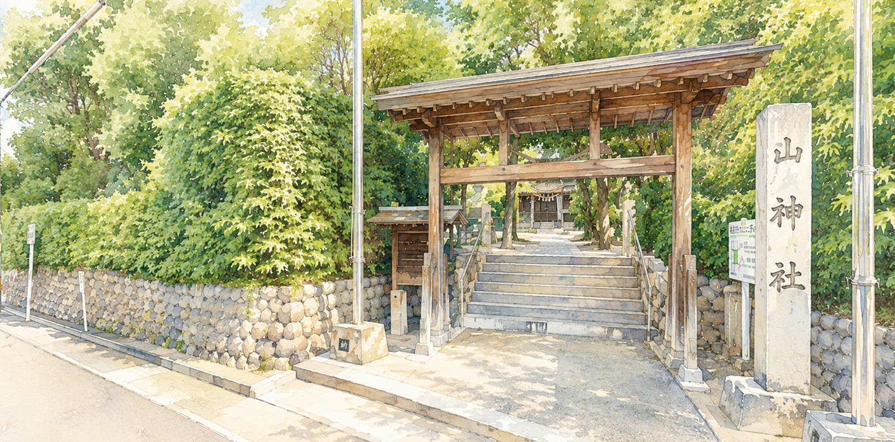

#新成人代表募集
#アジア大会
#サンライトサロン
陽明学区 デジタル回覧板 令和8年 9月号
⏱️約3分で読めます

令和9年「二十歳を祝う記念式典」代表者大募集！
一生に一度の晴れ舞台。ご家族から新成人へ、このお知らせを届けてみませんか？
【日程】 令和9年1月10日(日) 9:00〜11:30頃
【場所】 瑞穂文化小劇場
【募集】 誓いの言葉、キャンドル、交通安全宣言、司会（計7名）
※申込期限：令和8年10月31日
🌏
アジア最大の祭典が瑞穂へ！
アジア最大の祭典が瑞穂へ！
文化プログラム＆交通規制
いよいよ地元でアジア大会が開幕。入場無料の文化プログラムと、生活に関わる交通規制情報をまとめました。
🎪 【入場無料】文化プログラムの見どころ 🔽
アジア大会の観戦にはチケットが必要ですが、隣接する「瑞穂公園南ひろば」で開催される文化プログラムは誰でも入場無料でお楽しみいただけます！
- 日程：9/19, 9/22, 9/26, 9/27, 10/3, 10/4, 10/18, 10/24
- 内容：ステージ演舞、武将隊、なごやめし屋台、各自治体の体験ブースなど！
🚨 【重要】大会に伴う交通規制アラート 🔽
お出かけの際はご注意ください！
- 聖火リレー： 9月16日(水) 16:25〜17:40頃
桜山〜瑞穂運動場西周辺で交通規制あり - マラソン： 9月26日(土) 6:45〜11:20頃
相当の渋滞が予想されます。自動車の利用は極力ご遠慮を。 - 開・閉会式： 9/19, 10/4, 10/18, 10/24
瑞穂公園周辺で夜間に通行止め及び駐停車禁止措置あり。
♨️
サンライトサロン 秋企画
サンライトサロン 秋企画
水族館・ランチ・温泉ツアー
竹島水族館から美味しいランチ、そして絶景の天然温泉まで！秋の思い出作りにご参加ください。
【日時】 令和8年10月8日(木) 8:30集合
【集合】 地下鉄「総合リハビリセンター駅」
【参加費】 10,000円弱（交通費・水族館・ランチ・温泉込）
※申込期限：9月25日(金)まで
お申し込みは、お電話がおすすめです。
080-2071-4844
【注意】7日前からキャンセル料が発生します（30〜50%、当日100%）
🎒
トワイライトスクールだより
📖 夏休み後半〜9月の予定と注意事項 🔽
送迎のお願い：
1,2年生はお子さんの安全のため、必ずトワイライトルームの受付まで送迎をお願いします。
持ち物：
お弁当、大きめの水筒、学習用具（夏の生活、ドリル等）をご持参ください。マンガの持ち込みは禁止です。
※暴風警報等の発令時は、午前7時の時点で発令されていれば午前の活動は中止となります。
🌸
再発見！瑞穂区みどころマップ
アジア大会で世界から注目が集まる今こそ、地元の魅力を再確認してみませんか？
🚶♂️ 瑞穂区の歴史と自然を歩く 🔽
- 杉原千畝 人道の道： 「命のビザ」で知られる杉原氏の功績をたたえる全長4.5kmの道。
- 東山荘： 山崎川東岸に佇む大正時代建造の別荘。美しい庭園の見学は無料です。
- 山崎川の桜： 「さくら名所100選」に選ばれた全国的にも有名なスポット。せせらぎを聞きながら散策できます。